单独打开视频
点击画面播放
实际软件操作 · 示例数据
个人生活助手实际操作
保存备忘、核对准备清单、创建任务及处理到期建议。
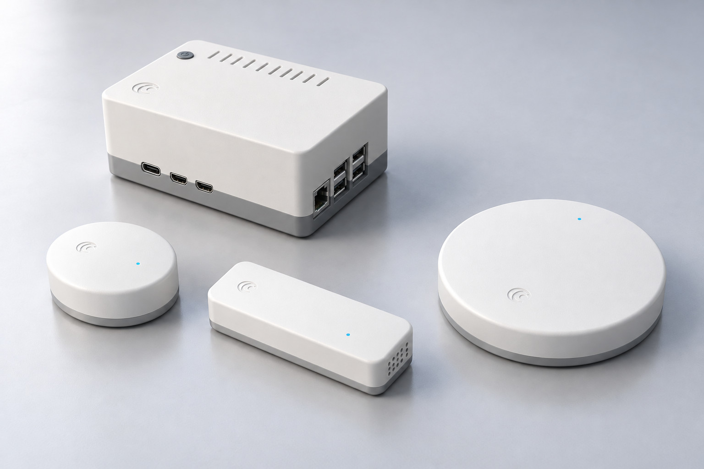
七系列按用途组织，具体型号、配置与原厂设备范围在项目中确认。
主机与中控配置；C01、C02及原厂/ODM选配按项目确认。
水浸、声学与火焰线索；床座、门窗及门口视频保留原厂配套身份。
天花与环境感知，环境与存在、毫米波状态按具体场景验证。
场景面板与呼叫键已规划；专业呼叫和执行设备为原厂选配。
电视与屏幕交互方案，按显示设备、操作方式和现场条件适配。
循星·联桥 N01用于协议桥接与现场接入规划。
五类空间套装及家庭、多房间、机构配置，保留原厂配套身份。
物品位置、预约要求和随行物品，可以先交代，再找回。
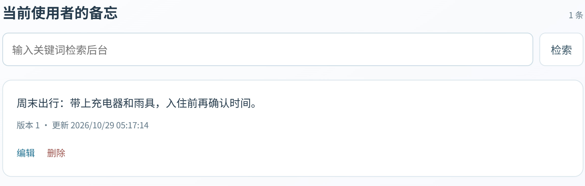
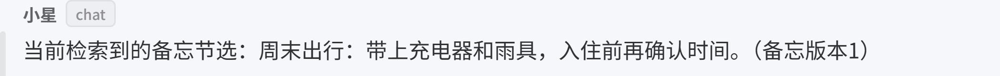
例如记录出行要带的物品，以及入住前要确认的事项。
按关键词或对话检索；内容有变化时，可以修改或删除。
说明准备目标，核对方案后保存清单；下一次打开，接着处理。
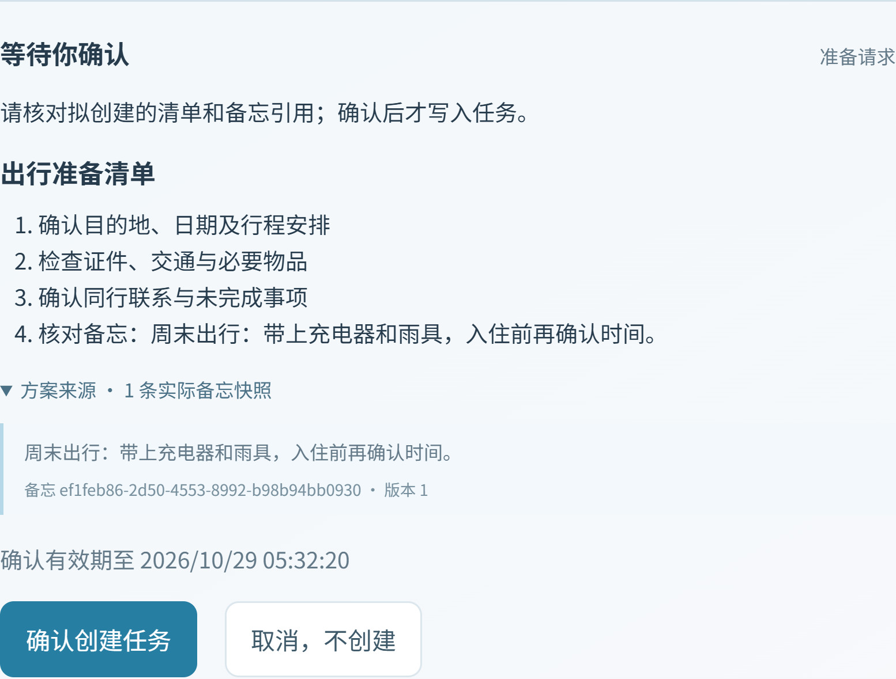
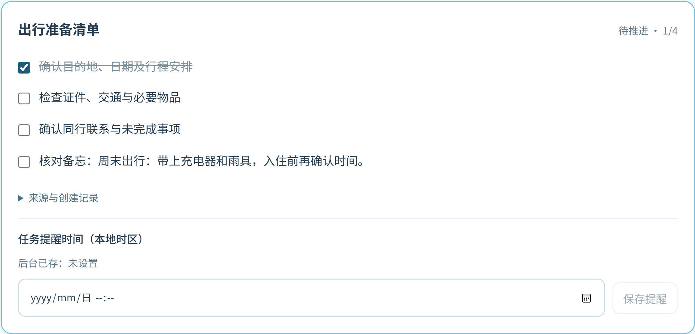
把客户沟通、出行或办事准备整理为明确事项。
逐项记录完成状态，为尚未处理的事项安排时间。
到期后形成建议，是否继续、何时处理，都保留选择。
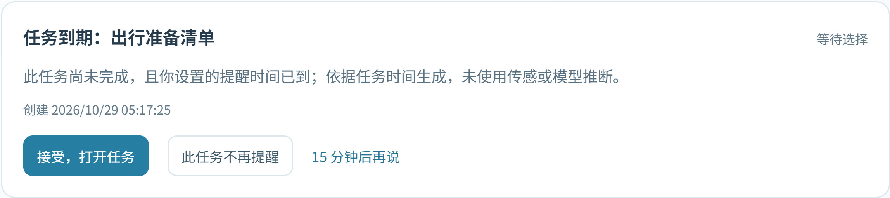
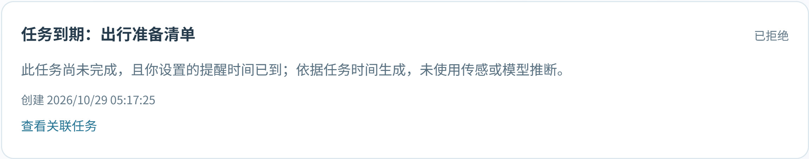
接受建议后打开原任务，继续查看或记录进度。
可以稍后处理、拒绝或暂停，避免提醒反复打断生活。
点击画面播放
保存备忘、核对准备清单、创建任务及处理到期建议。
以现场部署为基础，按实际任务选择计算、存储与设备接入配置。
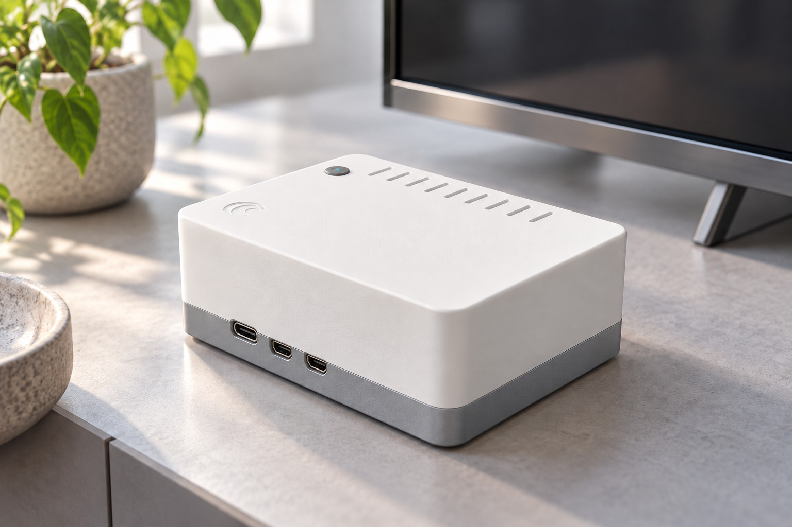
基础方案以Raspberry Pi 5为方向；较高模型负载再评估x86与独立显卡。
桌面摆放、线缆、散热和日常维护在安装时一起考虑。
优先评估循星·中枢通过HDMI连接现有电视，显示设备与输入方式按现场确认。
查看记录、准备清单和提醒建议；遥控或其他输入方式按现场验证。
中枢使用独立供电，手机与实体操作作为补充配置方向。
围绕橱柜下方、进水接头和设备附近的积水风险配置检测位置。
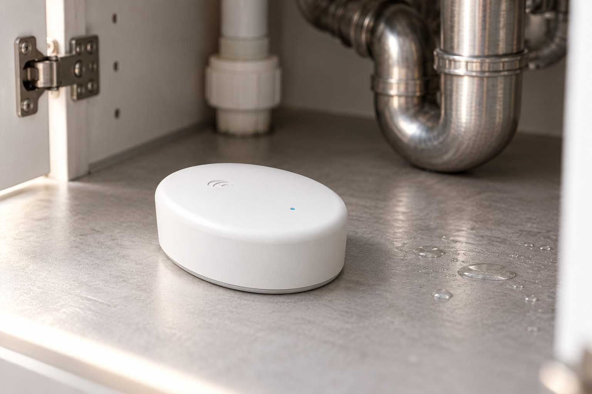
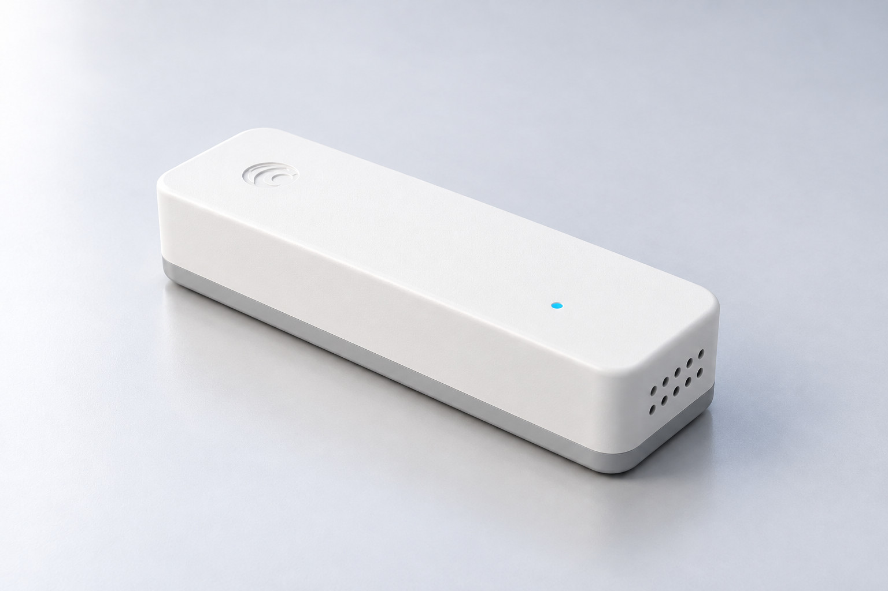
关注橱柜下方、进水接头和设备附近的低位积水。
研究用水活动，与水浸信息分别使用。关水须核阀型、水路和操作空间，再选配原厂执行器与手动恢复。
烟雾、燃气及一氧化碳选用原厂完整报警器，并按各自说明安装。
毫米波节点围绕房间布局和使用区域，研究存在、静止及疑似跌倒等状态。
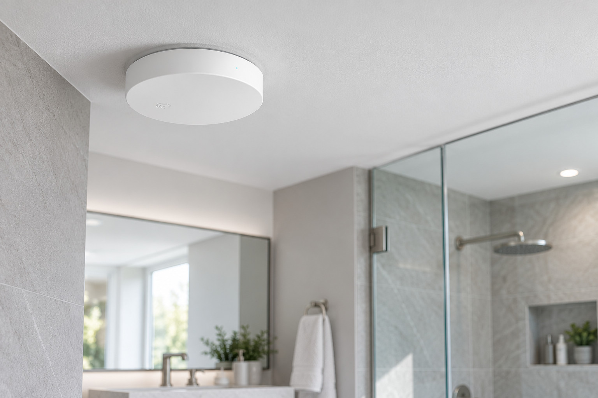
显示来源、位置和时间；疑似事件由人员进一步确认。
安装朝向、覆盖区域和提醒方式按具体空间验证，保留日常操作入口。
将来源、当前状态和处理过程放在一起，便于确认谁看过、谁处理过。
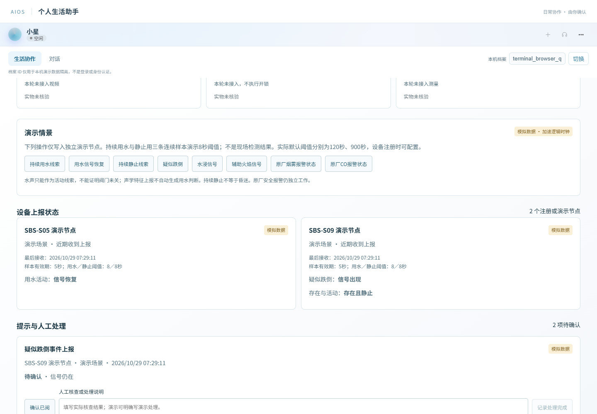
按设备、位置和时间查阅；数据中断或失效时保留未知状态。
确认已阅、传感恢复和处理完成分别记录，避免混为同一个结果。
此页为现有软件的模拟设备事件示例。
先体验循星 AIOS，再按实际空间确定系列配置和原厂配套。
围绕积水位置、水路和原厂风险设备确认配置。
按房间布局验证存在、静止及疑似事件的提示方式。
床座状态、呼叫与原厂测量设备按具体型号选配。
按来访、门窗状态和开锁权限分别确认设备。
核对电机、轨道、负载和使用意愿，再确定场景。
有明确负载再扩展计算与接入；冷柜需求先核已有报警和联网功能。
居护·家庭配置、居护·多房间配置、居护·机构配置，按现场范围确认。
已有设备、安装位置、供电网络和使用人员先核对。
列明实际采用的系列设备、原厂选配、接口和安装内容。
核对操作、故障恢复、维护责任和后续支持。
围绕一个希望解决的生活任务，了解适合的产品与配置。
产品演示 · 系列配置 · 原厂适配 · 安装与服务
本册产品图为设计效果图，软件画面采用示例数据。情境影片表达应用方向，完整识别与设备联动仍按项目验证。原厂专业设备保留原厂身份，具体配置与交付范围以项目文件为准。